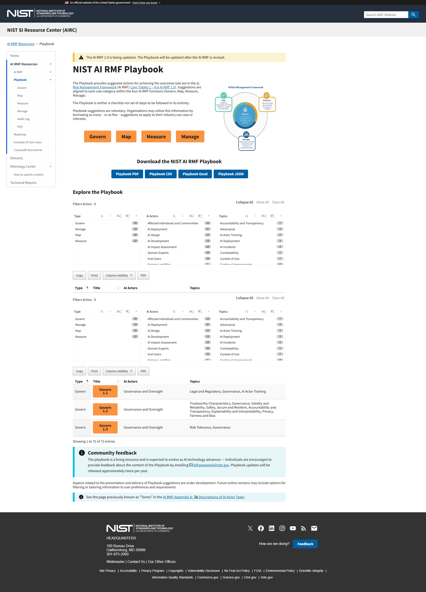

A$220K
+ Super + Bonus
Senior Manager
AI Governance
AI Governance
📍 SYDNEY
✨⚡这不是概念，
是真实招聘岗位 👇
是真实招聘岗位 👇

Preacta 当前岗位：Senior Manager – AI Governance · Sydney
REAL GOVERNANCE WORK
AI 风险管理
已经有真实框架和报表
已经有真实框架和报表

偏见隐私数据质量模型漂移合规责任
FROM AI TO EVIDENCE
真正稀缺的是
把 AI 管起来的人
把 AI 管起来的人
🤖 信贷 AI 上线前，需要检查什么？
识别数据偏差 → 评估客户影响 → 设计人工复核 → 保存审计证据 → 持续监测
系统
看懂
看懂
风险
识别
识别
证据
验证
验证
THREE LINES OF DEFENCE
三道防线
各自做什么？
各自做什么？
01
Line 1 · 业务团队
02
Line 2 · 风险与合规
03
Internal Audit
LEARN BY PRODUCING
不是只听概念
而是做出完整成果
而是做出完整成果
AI Risk & Assurance
Case Pack
System & Data Flow Map
AI Risk Assessment
Risk & Control Matrix
Monitoring Plan
Audit Test Plan
Governance Pack
3个周末
10h系统学习
1金融案例
NO CODING REQUIRED
把已有经验
迁移到 AI 时代
迁移到 AI 时代
审计风控合规财务网络安全数据技术
AI
GOVERNANCE
GOVERNANCE
查看课程详情 →
悉尼最近出现 AI Governance 高级经理岗位，
基本薪资最高二十二万澳元，另加养老金和奖金。企业为什么愿意为这种岗位付高薪？
因为 AI 风险不再只是技术问题。偏见、隐私、数据质量、模型漂移和合规责任，
都需要真实的框架、控制和报告。真正稀缺的，是能把 AI 系统、风险、控制和证据串起来的人。业务、风险合规和内部审计，
在三道防线中承担不同责任。课程用一个金融服务案例贯穿三个周末，
最终完成一套可展示的 Case Pack。不要求编程，把已有专业经验迁移到 AI Governance。
基本薪资最高二十二万澳元，另加养老金和奖金。企业为什么愿意为这种岗位付高薪？
因为 AI 风险不再只是技术问题。偏见、隐私、数据质量、模型漂移和合规责任，
都需要真实的框架、控制和报告。真正稀缺的，是能把 AI 系统、风险、控制和证据串起来的人。业务、风险合规和内部审计，
在三道防线中承担不同责任。课程用一个金融服务案例贯穿三个周末，
最终完成一套可展示的 Case Pack。不要求编程，把已有专业经验迁移到 AI Governance。